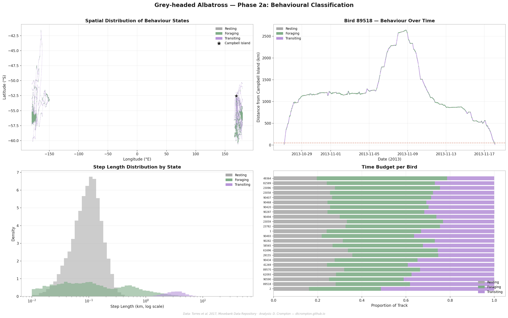
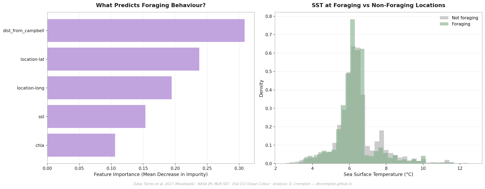
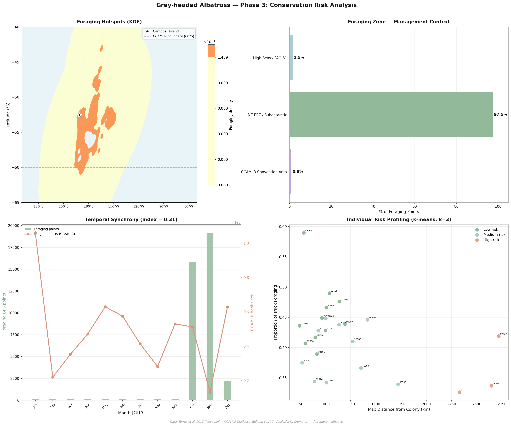

Movement ecology, behavioural classification, and bycatch risk modelling from GPS tracking data across the Southern Ocean
Grey-headed albatrosses are one of the world's most threatened seabird groups, with populations in long-term decline. Campbell Island, in New Zealand's subantarctic, hosts one of the largest breeding colonies — and is the source of the GPS tracking dataset underpinning this project.
Satellite tracking data can tell us where these birds go. But to understand what drives their decisions — why some birds range 750 km from the colony while others fly 2,700 km; why some areas attract dense foraging activity while others are traversed quickly — requires classifying behaviour from raw movement signals and linking it to the oceanographic environment those birds encounter.
The conservation question follows from the science: where and when do albatrosses overlap with longline fishing operations, and which individual birds bear the greatest risk? Longline fisheries, which set lines carrying thousands of baited hooks, are the primary source of albatross bycatch. A bird in active foraging mode — flying slowly, circling, responsive to any food signal — is far more likely to be attracted to a vessel's bait than one in directed transit.
This project analyses GPS tracking data from 24 grey-headed albatrosses across a complete breeding year (2013), using a four-phase pipeline: movement metric extraction, Hidden Markov Model behavioural classification, oceanographic driver modelling, and conservation risk analysis. The result is a data-driven picture of where, when, and how these birds forage — and which management authority is responsible for the waters where most of that foraging occurs.
The most striking result is not population-level — it is the degree of variation between individuals. Birds from the same colony, tracked in the same year, show a 3.5-fold difference in maximum foraging range (745 km to 2,715 km) and a near-doubling in the proportion of time spent actively foraging (33% to 59%). Total distance covered ranges from 3,465 km to 12,285 km per bird.
This points to genuine individual specialisation in foraging strategy — not noise. Published literature on seabird niche conservatism suggests individual strategies are consistent across years, meaning that the three birds identified as high-risk (birds 2, 89518, 90493) are likely chronically exposed to fishing gear, not incidentally.
A Random Forest classifier trained on five predictors (SST, chlorophyll-a, latitude, longitude, and distance from colony) predicts foraging behaviour with 64.9% test accuracy. Feature importance analysis reveals that spatial features dominate: distance from colony alone accounts for 31% of predictive power, with latitude (24%) and longitude (19%) adding further spatial signal. SST (15%) and chlorophyll (11%) contribute meaningfully but rank below position-based features.
This suggests these birds use learned spatial knowledge of productive zones rather than real-time environmental tracking — they return to known areas rather than dynamically following oceanographic gradients. If climate change shifts productive zones away from historically used areas, birds with strong spatial fidelity may not follow.
Only 0.9% of foraging GPS fixes fall south of 60°S, within the CCAMLR Convention Area. The overwhelming majority (97.5%) occurs in New Zealand's Exclusive Economic Zone and adjacent subantarctic waters. A complete bycatch risk assessment for this population requires New Zealand Ministry for Primary Industries fisheries data — not the Southern Ocean fishing records managed under CCAMLR.
GPS tracking data (93,474 fixes across 24 birds) loaded from the Torres et al. 2017 Movebank dataset. For each GPS fix, the following metrics were calculated:
Tracks were segmented into foraging trips using a 50 km colony threshold. Most birds made a single extended post-breeding foraging trip (mean 25 days, longest 274 days), consistent with grey-headed albatross inter-breeding behaviour.
A 3-state Gaussian Hidden Markov Model was fitted to log-transformed step length and absolute turning angle across all 24 birds simultaneously using hmmlearn. The model identifies the most likely hidden state at each GPS fix without any pre-labelled training data — the patterns emerge purely from the movement signal.
# Fit HMM to log step length + absolute turning angle
model = hmm.GaussianHMM(
n_components=3, # resting / foraging / transiting
covariance_type='full',
n_iter=200,
random_state=42
)
model.fit(features, lengths) # lengths = GPS points per birdStates were labelled by ranking on mean step length. The separation is ecologically meaningful: resting (0.14 km, 6.9° turning), foraging area-restricted search (1.44 km, 62.2° turning), and transiting (4.04 km, 9.9° turning). The foraging signal is particularly clean — a 62.2° mean turning angle against 9.9° for transit represents tight circling behaviour over prey patches, consistent with documented albatross foraging dynamics.

HMM results: spatial distribution of states, time-series for the most-tracked bird, step length distributions, and per-bird time budget. Foraging (green) concentrates around Campbell Island; transiting (mauve) extends across the Southern Ocean.
Monthly sea surface temperature (NASA JPL MUR SST) and chlorophyll-a (ESA CCI Ocean Colour) downloaded via NOAA CoastWatch ERDDAP and matched to each GPS fix using nearest-neighbour lookup in space and time. A Random Forest classifier was then trained on five features to test whether oceanographic conditions predict foraging behaviour.

Feature importance reveals spatial position dominates environmental variables. SST at foraging locations (6.31°C) is marginally cooler than non-foraging locations (6.44°C), consistent with foraging in productive upwelling zones.
Foraging hotspots mapped using 2D kernel density estimation on foraging-state GPS points, with longitudes converted to a Campbell Island-centred coordinate system to avoid dateline artefacts. Foraging points classified by management jurisdiction using latitude thresholds (CCAMLR Convention Area boundary at 60°S).
CCAMLR longline fishing effort (2013, LLS gear) analysed monthly and compared against bird activity patterns using a temporal synchrony index. Individual birds clustered into three risk groups using k-means on four foraging strategy metrics: maximum distance, proportion foraging, forage centre latitude, and total distance.

Foraging hotspot KDE (top left), management zone breakdown (top right), temporal synchrony with CCAMLR effort (bottom left), and individual risk scatter by cluster (bottom right). Three birds cluster as high-risk based on foraging range and strategy.
Folium web map combining individual bird tracks (togglable, coloured by risk cluster), foraging heatmap, CCAMLR longline effort circles scaled by hook count, and the approximate CCAMLR Convention Area boundary.
A key technical challenge: grey-headed albatrosses cross the international dateline, which causes standard Folium polylines to render incorrectly (a straight line drawn across the full map width). Solved by normalising all coordinates to a Campbell Island-centred system — shifting the dateline to −11°W (western Atlantic), far from any albatross data. Leaflet renders coordinates beyond ±180° correctly in adjacent tiles, producing continuous flight path display.
The HMM is appropriate here because albatross behaviour at any moment depends partly on the previous moment — a bird that was foraging a few minutes ago is more likely to still be foraging than to have switched to transit. The HMM captures this temporal dependency through transition probabilities between states, making it more ecologically realistic than treating each GPS fix as independent.
The alternative — threshold-based classification using fixed speed or turning angle cutoffs — requires manually chosen thresholds that may not generalise across individuals with different body sizes, wing morphologies, or environmental conditions. The HMM learns these thresholds from the data itself.
The finding that spatial features (latitude, longitude, distance from colony) outweigh environmental features (SST, chlorophyll) in predicting foraging behaviour has a nuanced interpretation. It does not mean the environment is unimportant — it means that in this dataset, where birds go (spatial fidelity) is a stronger predictor of whether they forage than what environmental conditions they encounter when they get there. These two explanations are not mutually exclusive: birds may return to spatially consistent areas precisely because those areas are reliably productive.
Kernel density estimation on longitude data spanning −180° to +180° produces a spurious discontinuity at the dateline. Since the birds' foraging range spans roughly 90°E to 120°W (a ~150° arc centred on Campbell Island at 169°E), the solution is to shift all longitudes into the range [−11°, 349°] — placing Campbell Island at the centre and moving the coordinate break to the western Atlantic where no data exists:
CENTER_LON = 169 # Campbell Island longitude
def normalize_lon(lon):
# Shift coordinate system so Campbell Island is at centre.
# Break point moves to 169 - 180 = -11°W (western Atlantic).
return ((lon - CENTER_LON + 180) % 360) + CENTER_LON - 180
forage_lon_360 = foraging_pts['location-long'].apply(normalize_lon)The CCAMLR Statistical Bulletin Vol. 37 (used for fishing effort) contains no spatial coordinates — only area codes referencing statistical subdivisions. Precise spatial overlap between albatross foraging zones and CCAMLR fishing effort therefore uses approximate area centroids. More importantly, 97.5% of foraging occurs north of the CCAMLR Convention Area boundary, in New Zealand's EEZ. A complete bycatch risk assessment requires NZ Ministry for Primary Industries fisheries data not available for this analysis.
Single breeding year: Data covers 2013 only. Individual foraging strategies are assumed consistent across years based on published literature on seabird niche conservatism, but multi-year data would be needed to confirm that birds 2, 89518, and 90493 are chronically rather than incidentally high-risk.
Environmental resolution: SST and chlorophyll matched at monthly/~0.1° resolution. Fine-scale oceanographic features — fronts, mesoscale eddies, upwelling filaments — that may drive local foraging decisions are not captured. The counterintuitive chlorophyll result (lower mean chlorophyll at foraging locations than non-foraging) is likely an artefact of this spatial smoothing.
Colony threshold: The 50 km boundary used to separate colony time from foraging trips is an approximation. All 24 birds came within 7–14 km of Campbell Island at some point, confirming colony visits, but fine-scale breeding phase dynamics are not captured.
NZ EEZ fishing data: The most consequential limitation for conservation application. Longline fishing in the birds' primary foraging zone (NZ EEZ, FAO Area 81) is regulated nationally, and effort data was not available for this analysis. SPRFMO (South Pacific Regional Fisheries Management Organisation) datasets would be the appropriate source for a complete risk assessment.
Languages: Python 3.13
Key Libraries: hmmlearn (HMM fitting), scikit-learn (Random Forest, k-means), scipy (KDE, statistics), folium (interactive mapping), xarray + netCDF4 (environmental raster handling), pandas, numpy, matplotlib
Data Sources: Movebank Data Repository (Torres et al. 2017 GPS tracks), NASA JPL MUR SST monthly (NOAA CoastWatch ERDDAP), ESA CCI Ocean Colour monthly (NOAA CoastWatch ERDDAP), GEBCO 2026 bathymetry, CCAMLR Statistical Bulletin Vol. 37
Methods: Gaussian Hidden Markov Model, Random Forest classification, kernel density estimation, k-means clustering, haversine distance calculation, Leaflet/Folium interactive cartography
Open to collaboration on environmental data science projects and actively seeking opportunities in geospatial analysis and conservation science